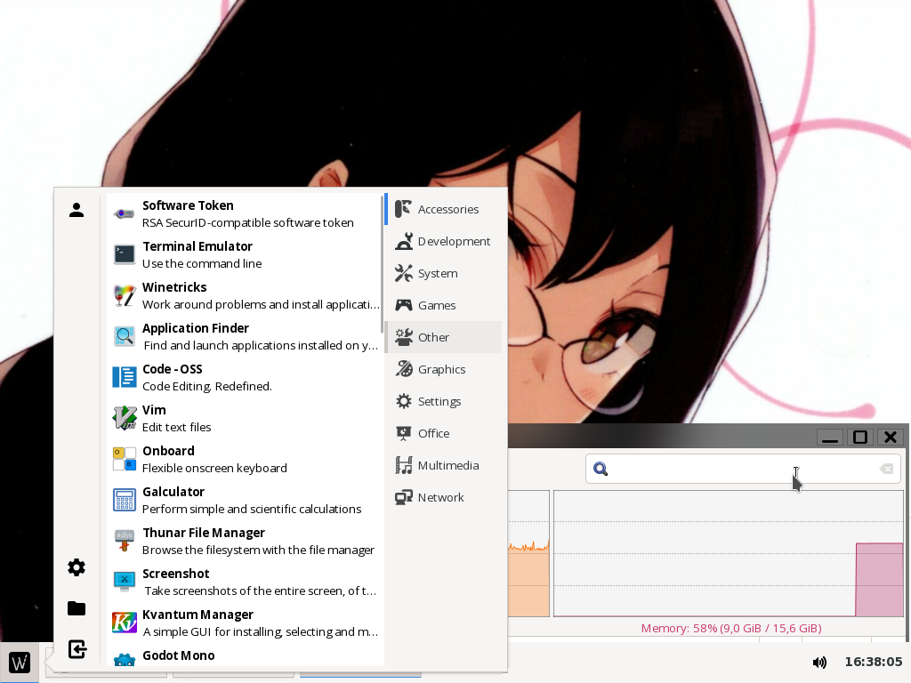
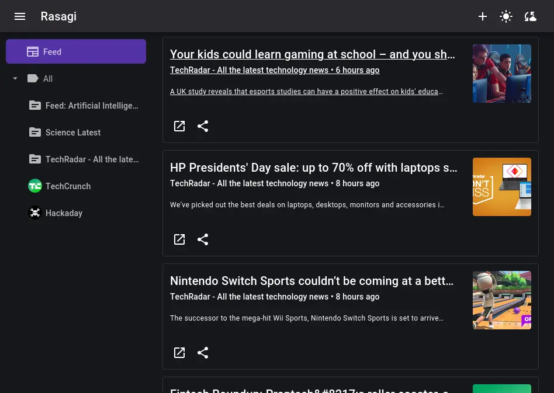
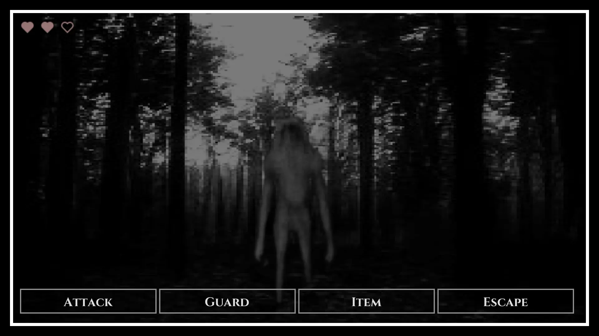

firstbober
welcome to my personal website which I use for publishing stuff on the world wide web.
if you find this font, colors and filters unreadable then it's probably skill issue or disability for which I tried to adapt my website via ARIA
big projects
anything that took much longer than expected, and shows result for it
${name}
 ${stack}
${stack}
wapanel

c++ ; gtk3
rasagi

typescript ; next.js ; mui
De,
shinde
burauza no Web gēmu ni risupōn shita

godot engine ; crayon.ai
everything else
I have touched a lot of code in the meantime ;)
NetCanv
Rust, OpenGL
pmOS for Wiko View
Linux, Low level, C
Boberhole
Node.js, HTML, Express
krita-rpc
Krita, Python
cpp-eval
C++, Python
cpp-xmled
C++, Python
hmielOS
TypeScript
discord-fs
FUSE, TypeScript, Node.js
kremowkuj
Rust
objectifier
C
jdm
JSON
MPS
C++, OpenGL
abridged-word2vec
JavaScript
comes-adventures
TypeScript, HTML
berry
TypeScript, SolidJS, Tailwind
previous versions
v1 - v3 are lost to time unfortunately
v7.5 is rewrite of v7 which was originally in D